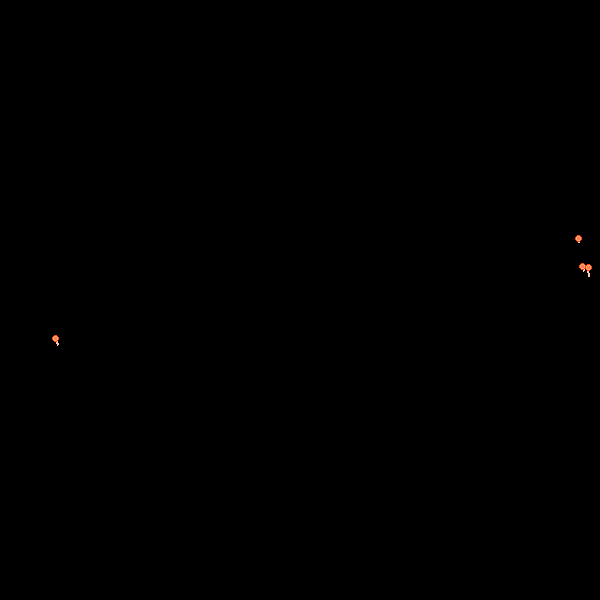
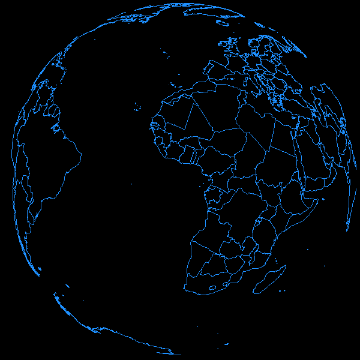
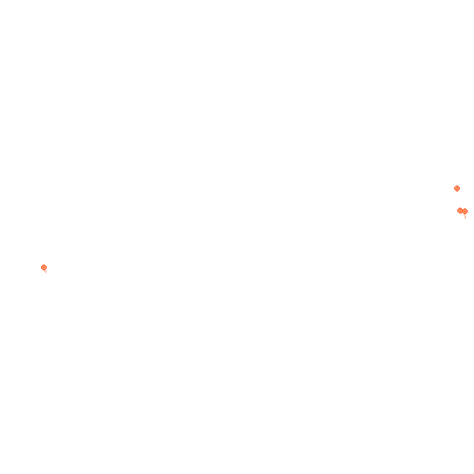

Convert images to video from R
This tutorial covers the use of ffmpeg in mapmate. ffmpeg is a wrapper function around the popular FFmpeg command line multimedia framework. It translates arguments provided by the user in familiar R syntax into a system call to the ffmpeg command line tool, which must be installed on the system.
Context
ffmpeg does not provide complete flexibility to allow making every possible valid call to FFmpeg, but users who are that well versed in the use of FFmpeg can use the command line utility directly or pass their custom calls directly to system from within R. The ffmpeg R function is primarily useful to users not well versed in the use of the FFmpeg multimedia framework who will be satisfied with the level of flexibility provided. Since this function is provided in the context of the mapmate package, it is aimed at assisting with converting still image sequences to video. While additional uses may be incorporated into ffmpeg in future, the FFmpeg multimedia framework itself provides a far broader suite of tools and functionality than currently is needed here.
Keep in mind that the purpose of mapmate is not to generate animations directly from R. See packages like animation if that is the goal. The goal that mapmate attempts to fulfill is strictly that of animation pre-production and it does so by focusing on the generation of still image sequences. Any animation is expected to be done later by the user via software dedicated to video editing and production. ffmpeg is provided in mapmate as an exception to the rule for users who wish to trade the full control and flexibility over video editing and production that mapmate aims to avoid entangling itself with for the convenience of generating relatively basic video output directly from an R session.
Ultimately, if you want an incredibly fancy video, do not rely on ffmpeg to splice and merge and overlay and juxtapose all your layers together, to crop and pan and rotate, to apply effects and transitions and every other form of video processing to your image sequences; finish the production outside of R, because that is what makes sense. If you are an FFmpeg expert, you don’t need to use ffmpeg at all (but perhaps consider helping to improve this code!). If you are not an FFmpeg expert, use other video editing software.
There always comes a point where it makes the most sense to transition from one application to another. When external solutions exist, it does not make sense to port the solution to every problem into R. Future package versions may provide more functionality and control over video production directly from R through ffmpeg or other functions, but at this time this is not be a primary development goal for mapmate.
Examples
The ffmpeg examples below are made using map image sequences, individually and in combination, so we make those first. Some great circle arc pathways are generated and sampled using the network data set in mapmate. Two copies of the image sequences are saved, one where the png files have a transparent background and one using a solid black background. The borders data set is also used for a couple versions of a map background layer with similar backgrounds. The four image sequences are saved to disk using save_seq.
Afterward, ffmpeg is called several times. ffmpeg operates on these files to convert the image sequences to videos. The initial examples of ffmpeg calls below specify gif output. Some calls specifying video output (e.g., mp4 files) are included later. While gifs are used here, ffmpeg function argument defaults relate more to video file type output than to animated gifs because video fit more within the context of mapmate.
These examples all generate files serially and do not make use of mclapply. This is done in order to reach the widest audience. Feel free to adapt these examples in order to save time on the save_seq calls if you are working in Linux. Be sure to check the introduction vignette first if you are not familiar with the restrictions.
Simulate network paths
library(mapmate)
library(dplyr)
library(purrr)
set.seed(192)
data(network)
distFun <- function(x) x/max(x) # simple distance weighting
endpoints <- gc_endpoints(network, "lon", "lat") %>% mutate(Dist_wts = distFun(Dist)) %>%
sample_n(1000, replace = TRUE)
arcs <- gc_arcs(endpoints, "lon0", "lat0", "lon1", "lat1", n = 100)
paths <- gc_paths(arcs, "group", size = 5, direction = "random", max.offset = 100)
n <- max(paths$id)
clrs <- c("#FFFFFF", "#FF450050", "#FF4500", "#FFFFFF50")
size <- c(1, 1, 3, 2)
args1 <- list(width = 600, height = 600, res = 72)
args2 <- c(args1, bg = "black")
file <- paste0("network_bg_", c("transparent", "black"))
save_seq(paths, id = "id", n.frames = n, col = clrs, type = "network", pt.size = size,
file = file[1], png.args = args1)
save_seq(paths, id = "id", n.frames = n, col = clrs, type = "network", pt.size = size,
file = file[2], png.args = args2)These first two sets of 152 maps should not take terribly long to output with the code above. The borders map sequences below will take a bit longer. At any rate, once these image sequences are saved, ffmpeg will be able to convert them to video relatively quickly.
Two nation borders sequences are saved, one with a transparent background (the default) and one with a black background. For all four sequences, I happen to be saving the images directory in a single directory named test-images, but this is not required. Also remember that even though default values are used for lon, lat and n.period and thus these arguments are unspecified, the important thing is that they are all the same across the three save_seq calls. This ensures that the nation borders background drawn on the rotating Earth has the same starting position, orientation, and speed of rotation as the great circle arc samples that are drawn on top. This is critical when layering of the image sequences is needed. The number of frames for the borders outputs is also set to match with the total number simulated by gc_paths.
Save background layers
data(borders)
borders <- map(1:n, ~mutate(borders, id = .x)) %>% bind_rows()
file <- paste0("borders_bg_", c("transparent", "black"))
save_seq(borders, id = "id", n.frames = n, col = "dodgerblue", type = "maplines",
file = file[1], png.args = args1)
save_seq(borders, id = "id", n.frames = n, col = "dodgerblue", type = "maplines",
file = file[2], png.args = args2)ffmpeg usage
Convert the network paths image sequence to an animated gif at 10 fps.
p <- "network_bg_black_%04d.png"
out <- "ntwk_10fps.gif"
# 10 fps gif
ffmpeg(pattern = p, output = out, rate = 10)
# Same as above. Set overwrite=TRUE if output exists.
ffmpeg(pattern = p, output = out, delay = 1/10, overwrite = TRUE)
p <- "borders_bg_black_%04d.png"
out <- "brdr_10fps.gif"
# 10 fps gif
ffmpeg(pattern = p, output = out, rate = 10)
# Same as above
ffmpeg(pattern = p, output = out, delay = 1/10, overwrite = TRUE)
However, you probably don’t want to use transparent-background images like the following to make an animated gif because the images are actually stacked on top of each other in the making of the gifs. The default background color for png files generated by mapmate is transparent because mapmate is aimed at video output, not gifs. With the former, transparency generally allows more flexibility in video production in terms of layering images at each frame rather than stacking images over time.
p <- "network_bg_transparent_%04d.png"
out <- "ntwk_10fps_stacking.gif"
# The stacking of images is revealed by the transparent backgrounds
ffmpeg(pattern = p, output = out, rate = 10)
p <- "borders_bg_transparent_%04d.png"
out <- "brdr_10fps_stacking.gif"
# The stacking of images is revealed by the transparent backgrounds
ffmpeg(pattern = p, output = out, rate = 10)

As a quick aside, notice how this is not a problem is the FFmpeg process chain happens to include resizing or rescaling; the transparency is lost.
p <- "borders_bg_transparent_%04d.png"
out <- "brdr_10fps_stacking_300x300.gif"
# The stacking of images is revealed by the transparent backgrounds
ffmpeg(pattern = p, output = out, rate = 10, size = "300x300")

Now that all that has been shown, let’s make mp4 files. The next example below uses the default rate="ntsc", or about 29.97 fps (more specifically, 30000/1001). Images in the sequence can be skipped using start.
p <- "borders_bg_black_%04d.png"
out <- "brdr_start60.mp4"
# start on frame 60
ffmpeg(pattern = p, output = out, start = 60)Looking at rescaling again, the output can be rescaled on the fly using size in dimensions or with a standard abbreviation, similar to how rate can be specified.
p <- "borders_bg_black_%04d.png"
out <- c("brdr_300x300.mp4", "brdr_720x480.mp4")
ffmpeg(pattern = p, output = out[1], size = "300x300")
ffmpeg(pattern = p, output = out[2], size = "ntsc")Here are some more examples generating mp4 file outputs. See the help documentation for ffmpeg and experiment with the arguments. Other available output file types include .mov, .mkv and .webm.
p <- "network_bg_transparent_%04d.png"
out <- paste0("ntwk_example_", 1:4, ".mp4")
ffmpeg(pattern = p, output = out[1], rate = "ntsc", size = "ntsc", preset = "ultrafast",
lossless = TRUE)
ffmpeg(pattern = p, output = out[2], rate = 5, size = "source", preset = "veryslow",
lossless = TRUE, min.rate = "ntsc")
ffmpeg(pattern = p, output = out[3], size = "300x300", preset = "veryslow")
ffmpeg(pattern = p, output = out[4], delay = 1, fps.out = 10)Limitations with merging multiple image sequences
The tutorial essentially ends with the previous examples above. I have included a small section regarding layering multiple image sequences into a single video (or gif) output below. However, it is a work in progress and does not yet work as intended. While the structure of the code needed to support merging image sequences is intact within ffmpeg, the resulting behavior of applying ffmpeg to multiple image sequences is not what is expected.
I have retained this imperfect functionality in ffmpeg for a few reasons:
- I plan to eventually improve it rather than remove it permanently.
- If anyone with expertise in FFmpeg cares to work on this wrapper function, it is available on Github and you can see what I have begun with.
mapmateis not focused on direct-from-R animation, but rather on image sequence generation for video pre-production. Therefore, I don’t mind that this function doesn’t do everything yet or that some permitted uses don’t quite work right. If nothing else, for now it can help remind users that this package is not intended to support a need for direct animation like theanimationpackage does. At least at this time,ffmpegis considered an extra feature, which deviates from the main purpose of the package.
That said, let’s discuss sequence blending. pattern can be a vector. Image sequences referred to in each element of pattern are merged, or blended, together. The first element is the top layer in the output. rate, delay and start are recycled if not also vectors when pattern is a vector. There are many limitation on how ffmpeg can be used and how complex the operations can be. The help documentation is thorough regarding what can and cannot be done with this wrapper function. Enter ?ffmpeg for help.
The image sequence with the transparent background is placed on top. Both sequences could have transparent backgrounds, but since one does not, it should not be placed on top or it will mask the other. This can be seen in the second video. However, alpha can be set lower than 1.0 and this will add transparency on the fly to the top layer, as seen in the third video.
p <- c("network_bg_transparent_%04d.png", "borders_bg_black_%04d.png")
ffmpeg(pattern = p, output = "ntwk_brdr_layered.mp4", alpha = 1)
ffmpeg(pattern = rev(p), output = "ntwk_brdr_layered_reversed.mp4")
ffmpeg(pattern = rev(p), output = "ntwk_brdr_layered_reversed_alpha50.mp4",
alpha = 0.5)…or I should say, that is what I expect to see from the above three videos. As you can actually see when you run the code, this is not what you get. Behavior can differ further between video outputs and animated gif outputs. Further still, more than two image sequences can be merged, yet while command line output (set details=TRUE) from FFmpeg displayed to the R console may suggest the merging proceeds successfully, a third image sequence layer never seems to be visible in the output video. Part of the issue is the code itself, but the root is of course that I don’t yet fully understand the nuances of how blending works in terms of raw FFmpeg syntax or what is the best way to specify merging (It seems there are several possible ways to do this with FFmpeg.).
In summary, merging does not work and I advise against using it at this time unless your specific use case is simple and standard enough that ffmpeg gives you the output you want. Otherwise, only use ffmpeg to make basic video output from single image sequences. The latter was initially all I was going to develop, but I am leaving the possibility open of merging functionality to be more successfully integrated into ffmpeg. The main goal for mapmate remains to provide image sequence generation under the assumption that users will do whatever they wish with their saved file sequences externally, whether that is to dump their images on a timeline in a popular GUI video editing software application or to use a command line application like FFmpeg from the terminal.